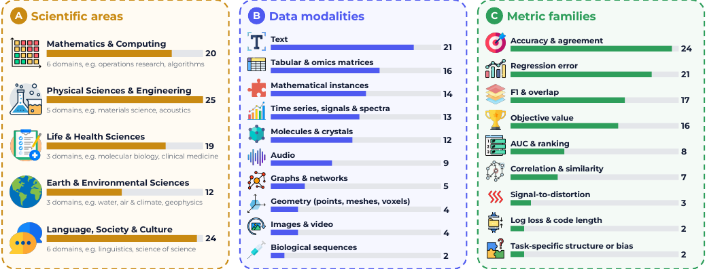
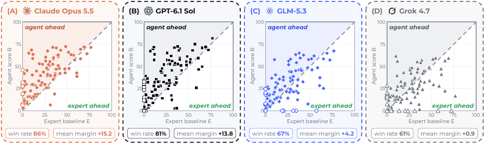
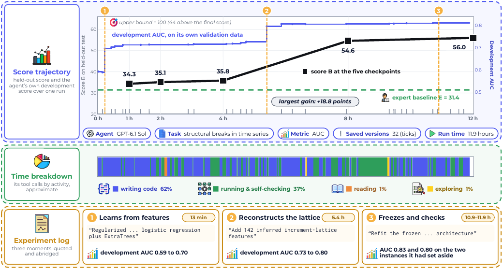

“科研智能体能不能做研究”不能只看它会不会写代码或生成一份报告。更接近真实入门考核的任务是：给它一个领域正在研究的问题、一份能运行但不完美的起点方案和有限时间，看它能否通过实验把方案推到比既有专家解更好的位置。
本文解读 Zeqi Zhou、Minghao Liu、Jiarui Liu 等人的 REE: A Scientific Research Entrance Exam for AI Agents（arXiv v1，2026-11-25）。REE（Research Entrance Exam）提出 100 道跨学科、开放式、可自动评测的科研问题，用同一套“起点—专家参考—隐藏测试—时间进展”协议评估科研 Agent。
一、课题解读：科研智能体要证明的是改进能力
真实研究很少是一次性回答一个有唯一答案的问题。研究者通常从已有方法或基线开始，先理解数据和评价指标，再提出改动、运行实验、检查失败原因，并在预算耗尽前决定是否继续。最后还要在没有见过的数据上确认改进不是过拟合。
因此，科研智能体评测至少需要同时观察四件事：它是否能让一个可运行方案变好，是否能超过领域已有工作，是否能在隐藏数据上保持改进，以及它用了多少时间和计算。单次问答、论文摘要质量或一个已知答案的准确率，都不能完整覆盖这条研究链。
二、相关文献解读：从单次产出到长时程科学改进
| 基准 | 主要覆盖 | 与 REE 的差异 |
|---|---|---|
| RE-Bench、MLE-bench | 机器学习研发或 Kaggle 工程任务 | 任务较少或以竞赛为主，科学领域覆盖有限 |
| PaperBench、AIRS-Bench | 论文复现、研究流程或 ML 科研 | 更关注论文级产出或 ML，跨学科迭代改进较少 |
| Agent4Sci、NatureBench | 多领域科研问题 | 有较广领域，但专家参考、隐藏评测和逐时进展的组合方式不同 |
| AlphaEvolve | 在可自动评分的问题上演化程序 | 展示了代码改进能力，REE 将类似的迭代协议扩展成跨科学领域的入口考试 |
REE 的关键不是把所有科研任务做成同一种算法，而是保留每个领域自己的目标和指标，同时把起点解、专家解、隐藏测试和时间预算放进同一评分框架。
三、研究问题解读：这个“入学考试”想测什么
下面是我们的阅读归纳：
- 现有科研 Agent 能否在 100 个开放问题上稳定改进一个工作中的 starter solution？
- 它们的结果相对独立评测过的专家解处在什么位置，优势是否跨科学领域成立？
- Agent 的提升是靠长时间随机尝试，还是能从数据和领域方法中找到可解释的改进？
- 单一总分如何同时保留问题难度、专家参考、隐藏泛化和时间进展？
四、方法解读：把每道科学问题变成一场 12 小时的迭代实验

第一步：选择领域仍在研究的开放问题
每道题必须满足三个条件：答案是由程序产生、以连续量化指标评分而非简单对错；能在 Agent 看不到的实例上自动评测；存在一个能在任务预算内运行的已建立人类解。问题和指标保留该领域自己的定义，而不是强行换成通用 loss。
例如，蛋白质序列建树不是只看平均距离误差，而是比较生成树的分支结构；EEG 癫痫检测的隐藏记录来自开发数据未出现的新来源；量子纠错任务中的真实噪声还可能偏离提供的 Pauli 近似模型。这些设计让 Agent 必须面对领域特有的泛化问题。
第二步：为 Agent 提供可运行但不完整的起点
任务输入包含问题说明、一个完整可运行的 starter solution 和 development data。Starter 通常是短而简单的方法，Agent 可以修改、替换甚至丢弃它。开发数据提供实验反馈和调参空间，但独立的 held-out test instances 在运行期间不可见、不会返回分数。
每次运行最长 12 小时，在固定计算预算和离线环境中进行。Agent 自己决定什么时候停止，保存中间版本，使用 checker 在 development data 上检查当前分数；结束后，单独容器中的 grader 在隐藏测试上评估最终方案。失败、超时或非法输出按照该任务定义的失败值处理。
第三步：构造可比较的专家参考
专家解不是一个统一来源，而是五类已建立的人类方案：24 道题来自组织化竞赛/排行榜，36 道来自论文或作者代码，20 道来自数据集或工具包的参考方法，9 道来自有实际影响力的公开工具，11 道是领域标准方法。论文作者会把每个专家解在相同隐藏实例、时间限制和运行条件下重新跑一遍。
这一步很重要：论文里引用的历史分数可能用了不同数据、硬件或时间，REE 不直接照抄，而是把专家方案和 Agent 方案都送进当前 grader。因此“超过专家”指在 REE 的可比条件下超过一个建立好的参考，并不等于击败该领域所有研究者。
第四步：把不同指标映射到同一坐标
对任务 (i)，先将 Agent 的隐藏测试结果 (B_i) 映射到 0–100：0 对应 starter solution，100 对应该任务指标的上界。专家方案分数记为 (E_i)。REE 报告四个主要统计量：
(̄B) 是 Agent 的平均绝对位置，(̄M) 是相对专家的平均 margin，(W) 是胜过专家的题目比例，(W_5) 则要求多出 5 分，避免极小差异被当成胜利。均值和 margin 使用按任务重采样的 95% bootstrap 区间；跨 Agent 比较按同一道题配对。
第五步：同时记录研究过程
每个运行在 1、2、4、8 小时和最终时刻保存检查点。作者还记录版本数量、工具调用、停止时间、token 使用量，并用 LLM judge 阅读领先 Agent 的最终方法，追踪核心想法来自哪些论文、公开代码或领域方法。时间曲线只纳入五个检查点都有记录的运行，避免把不同时间范围的样本混在一起。

REE 的 100 道题分布为：数学与计算 20，道物理与工程 25，生命与健康 19，地球与环境 12，语言社会与文化 24；共 23 个 domain、91 个 sub-field、10 种数据模态和 9 类指标。它不是把“科学”简化成机器学习，而是让声学、材料、临床、气候、语言学、科学计量等问题保留自己的评价方式。
五、实验设计与结果：先看四个 Agent 的整体表现，再看改进如何发生
主实验：100 道跨科学问题上的统一比较
作者测试四个“模型 + harness”配置：Claude Opus 5.5 在 Claude Code，GPT-6.1 Sol 在 Codex，GLM-5.3 和 Grok 4.7 也在 Claude Code。四者都使用最高推理强度和最大上下文；每个 Agent—任务组合只有一次运行，最长 12 小时。
| Agent（harness） | 平均分 (̄B) | 95% CI | 平均 margin (̄M) | 胜过专家 (W) | 超过 5 分 (W_5) |
|---|---|---|---|---|---|
| Claude Opus 5.5（Claude Code） | 39.6 | [36.0, 43.2] | +15.2 | 86% | 72% |
| GPT-6.1 Sol（Codex） | 38.2 | [34.2, 42.3] | +13.8 | 81% | 69% |
| GLM-5.3（Claude Code） | 28.6 | [25.0, 32.3] | +4.2 | 67% | 56% |
| Grok 4.7（Claude Code） | 25.3 | [21.9, 28.6] | +0.9 | 61% | 44% |
| 专家参考 | 24.4 | [20.7, 28.4] | — | — | — |
主实验的整体结论有两层。第一，领先 Agent 的平均分高于重新评测的专家参考，且在五个大区域的 margin 都为正；Claude Opus 5.5 和 GPT-6.1 Sol 分别在 86% 和 81% 的题目上超过专家。第二，分数离任务上界仍很远：没有运行达到上界，单题最高最终分为 81.7。因此“胜过专家”不是“解决科研”，而是说明在当前起点、预算和自动指标下，Agent 已经能稳定改善许多成熟方案。

另外，两个领先 Agent 的结果并不意味着只要给更多 token 就一定更好。GPT-6.1 Sol 的中位输出 token 约为 768k、总 token 106.2M；Claude Opus 5.5 分别约为 148k 和 21.6M，约相差五倍，但单次运行分数与输出 token 的 Spearman 相关仅为 0.20–0.31。模型、harness、工具调度和停止策略是绑定在一起的，不能把表格简单当成纯模型排行榜。
时间分析：研究收益在两小时出现，但晚期改进仍重要
Claude Opus 5.5 和 GPT-6.1 Sol 在 1 小时的平均 margin 分别为 -3.0 和 -0.5，2 小时变为 +5.4 和 +3.4，4 小时达到 +8.6 和 +8.3；到 4 小时时，两者平均分已达到各自最终平均分的 87%。但对仍工作到第 8 小时的运行，8 小时到结束期间仍有 60% 的 Opus 运行和 76% 的 GPT 运行继续提高，分别有 12% 和 21% 的运行提升超过 5 分。

这个案例说明“早早超过专家”与“后面没有价值”不是一回事。GPT-6.1 Sol 在一个结构突变时间序列任务中，先从方差差异基线改成模型融合，再观察数据中重复值和小数分辨率，重建乘法路径并加入 142 个格点特征；最终保存 32 个版本，11.9 小时结束，测试分数 56.0。它还把一部分开发数据留作最终检查，直到选定候选后才使用，避免用同一份数据不断调参。
方法来源分析：领先方案主要是“改造与组合”
作者对两位领先 Agent 的最佳方法进行 LLM 辅助追踪。最终方案在 51% 的问题上是对领域标准方法的针对性改造，在 45% 的问题上组合已有方法；这不是凭空发明全新范式，而是把领域知识、数据规律和实验反馈拼接成更合适的实现。
例如，CO₂ 多孔框架吸附任务中，两者都加入孔内 CO₂ 力场能量；基因树任务中，Agent 用序列比对和树搜索替代 alignment-free 统计；基因调控网络任务中，GPT-6.1 Sol 将时间顺序证据、循环图先验和模拟器训练的边评分器组合，达到该题最高 71.7。也有反例：合流证明任务中的 Agent 方案分数低于专家，说明组合能力不是每个领域都能可靠迁移。
六、我们自己的思考
课题思考：这个领域在研究什么
REE 把科研 Agent 的核心从“能不能生成论文”转成“能不能在一个真实社区认可的问题上，把可运行方案推进到更好的位置”。它的价值在于同时保留了四条坐标：领域指标、专家参考、隐藏泛化和时间进展。这样我们才可以区分一个 Agent 是很会写说明，还是确实能做实验和改方法。
局限问题思考：目前还存在哪些问题
第一，REE 只覆盖能够自动评测、且有可运行专家解的问题；自然科学中需要真实实验、仪器和长期观察的问题仍在范围之外。第二，专家参考来自五种不同层级，虽然都在相同条件下重跑，但“专家 baseline”并不等价于每题的领域最优。第三，每个 Agent—任务只运行一次，最高推理强度、最大上下文和固定 12 小时预算把模型、harness 和资源差异混合在一起。第四，任务分数是领域指标的归一化，100 是指标上界而非“完成了全部科学目标”；而 LLM judge 对方法来源的分析也属于辅助解释，不是人类审稿结论。
解决方案思考：这些问题有哪些解决方向
可以把 REE 的自动任务与真实实验任务组成双层考试：第一层测可复现的程序改进，第二层测实验设计、仪器协作、异常处理和长期验证。专家参考应保留多个强度等级，并报告专家之间的差距、重跑方差和参考开发成本。Agent 比较则需要多次随机种子、相同 harness 的跨模型对照，以及明确的 token、GPU、工具和人工修复账本。最后，除了 0–100 分和胜率，还应记录假设变化、失败原因、证据链和独立复核结果，让“超过专家”进一步变成可解释、可迁移的科学贡献。
一句话总结： REE 像一场真正的科研入门考试：不给 Agent 唯一答案，而是给它一个可运行但不完美的方案、领域自己的指标、隐藏测试和 12 小时预算，观察它能否通过迭代把方法推进到超过可比专家参考的位置。